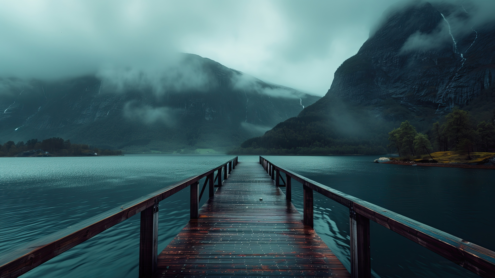

Норвегия
Страна величественных фьордов, северного сияния и богатой культуры
Норвегия
Страна величественных фьордов, северного сияния и богатой культуры
Норвегия — удивительная скандинавская страна, известная своими захватывающими дух природными пейзажами. От величественных фьордов до северного сияния, Норвегия предлагает уникальные впечатления для каждого путешественника.
Страна занимает западную часть Скандинавского полуострова и славится своей береговой линией, изрезанной глубокими фьордами, горами и ледниками. Норвегия — одна из самых развитых стран мира с высоким уровнем жизни и богатой культурной историей.
Столица Норвегии — Осло, а официальный язык — норвежский. Страна является конституционной монархией с парламентской системой правления.
Норвежские фьорды — одни из самых красивых природных достопримечательностей в мире. Гейрангер-фьорд и Нэрёй-фьорд включены в список Всемирного наследия ЮНЕСКО.

Норвегия — одно из лучших мест на Земле для наблюдения за северным сиянием. Особенно хорошо его видно в северных регионах страны с сентября по март.
Берген, известный как "ворота в царство фьордов", славится своими разноцветными деревянными домами на набережной Брюгген, включенной в список Всемирного наследия ЮНЕСКО.
Около 2/3 территории Норвегии занимают горы, что делает её одной из самых гористых стран Европы.
Летом в Северной Норвегии солнце не заходит за горизонт в течение нескольких недель — это явление известно как "полуночное солнце"
Норвегия имеет вторую по длине береговую линию в мире после Канады, протяженностью более 25 000 км.
Нобелевская премия мира вручается в Осло, в то время как другие Нобелевские премии вручаются в Стокгольме.